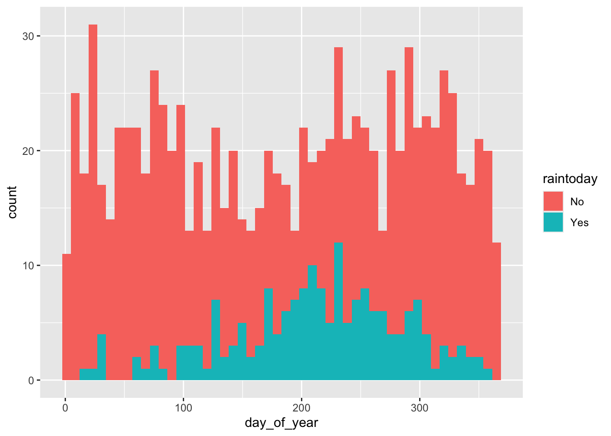
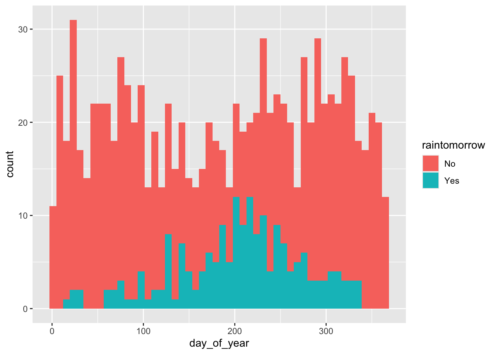
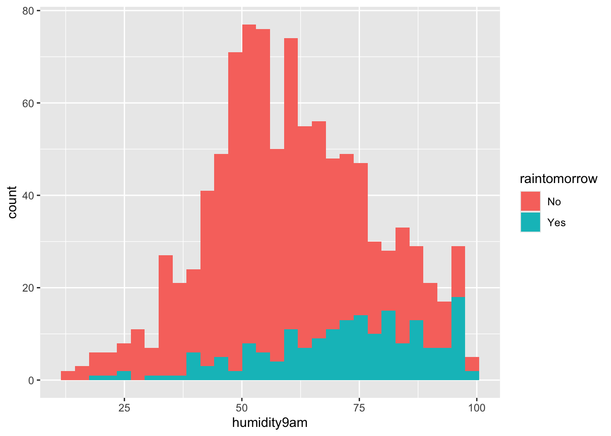
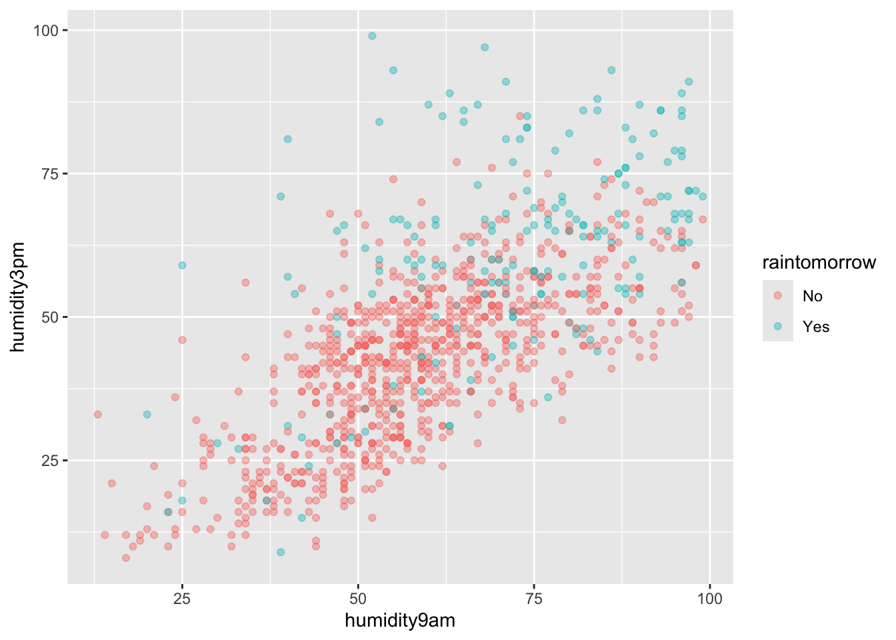
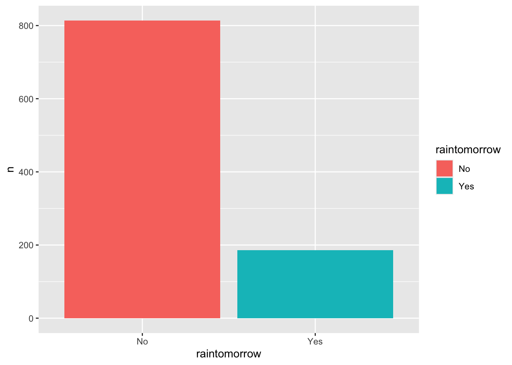
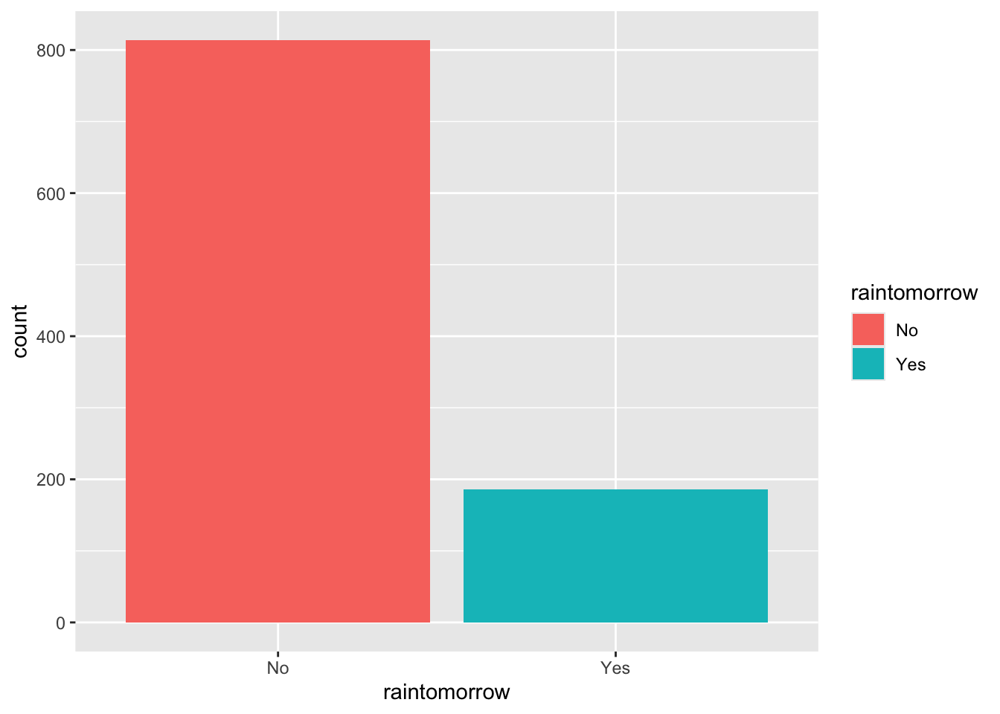
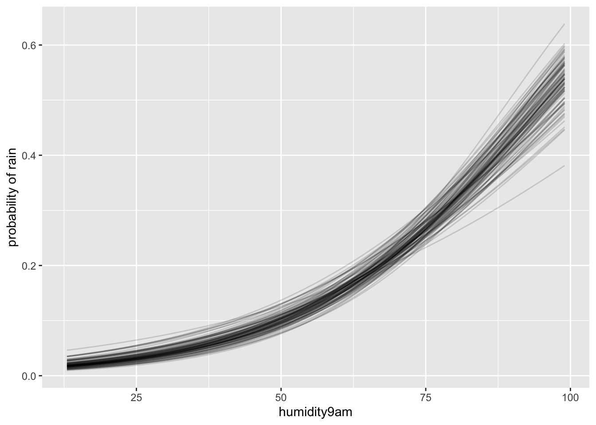

Consider the following data story. Suppose we again find ourselves in Australia, the city of Perth specifically. Located on the southwest coast, Perth experiences dry summers and wet winters. Our goal will be to predict whether or not it will rain tomorrow. That is, we want to model Y, a binary categorical response variable, converted to a 0-1 indicator for convenience
Though there are various potential predictors of rain, we’ll consider just three:
X1=today’s humidity at 9 a.m. (percent)
X2= today’s humidity at 3 p.m. (percent)
X3= whether or not it rained today.
Libraries
library(bayesrules)library(rstanarm)
Loading required package: Rcpp
This is rstanarm version 2.32.1
- See https://mc-stan.org/rstanarm/articles/priors for changes to default priors!
- Default priors may change, so it's safest to specify priors, even if equivalent to the defaults.
- For execution on a local, multicore CPU with excess RAM we recommend calling
options(mc.cores = parallel::detectCores())
library(bayesplot)
This is bayesplot version 1.13.0
- Online documentation and vignettes at mc-stan.org/bayesplot
- bayesplot theme set to bayesplot::theme_default()
* Does _not_ affect other ggplot2 plots
* See ?bayesplot_theme_set for details on theme setting
── Conflicts ────────────────────────────────────────── tidyverse_conflicts() ──
✖ dplyr::filter() masks stats::filter()
✖ dplyr::lag() masks stats::lag()
ℹ Use the conflicted package (<http://conflicted.r-lib.org/>) to force all conflicts to become errors
Take 10 minutes to learn about the data, focusing on raintomorrow
ggplot(weather, aes(x = day_of_year, fill = raintoday)) +geom_histogram(bins =50)

ggplot(weather, aes(x = day_of_year, fill = raintomorrow)) +geom_histogram(bins =50)

ggplot(weather, aes(x = humidity9am, fill = raintomorrow)) +geom_histogram()
`stat_bin()` using `bins = 30`. Pick better value `binwidth`.

ggplot(weather, aes(x = humidity9am, y = humidity3pm, color = raintomorrow)) +geom_point(alpha =0.4)

weather %>%count(raintomorrow) %>%mutate(prop = n/sum(n)) %>%ggplot(aes(x = raintomorrow, y = n, fill = raintomorrow)) +geom_col()

ggplot(weather, aes(x = raintomorrow, fill = raintomorrow)) +geom_bar()

Rain Model 1
Priors:
✅ From probability → log-odds
our prior understanding that on an average day, there’s a roughly 20% chance of rain
Use the logit (log-odds) transformation:
qlogis(0.2)
[1] -1.386294
qlogis(0.2) # [1] -1.386294 → about -1.4 log-odds
✅ From log-odds → probability
Use the inverse logit (often called the logistic function):
plogis(-1.4)
[1] 0.1978161
SD = 0.7
plogis(-2.8)
[1] 0.05732418
plogis(0)
[1] 0.5
This says: before seeing data, you think an average day’s rain probability is most likely around 20%, but could reasonably be anywhere from ~6% to ~50% (quite wide—intentionally weakly informative).
Prior slope
exp(0.07)
[1] 1.072508
(1.072508-1) *100
[1] 7.2508
An odds ratio of ≈ 1.072 means that for each +1 percentage point increase in humidity, the odds of rain multiply by 1.072, i.e. they increase by about 7.2 %.
(exp(0.07-0.07) -1) *100
[1] 0
(exp(0.07+0.07) -1) *100
[1] 15.02738
The odds of rain might increase anywhere from 0% to 15% for every extra percentage point in humidity level:
rain_model_1 <-stan_glm(raintomorrow ~ humidity9am,data = weather, family = binomial,prior_intercept =normal(-1.4, 0.7),prior =normal(0.07, 0.035),chains =4, iter =5000*2, seed =84735)
here’s an 80% posterior chance that for every one percentage point increase in today’s 9 a.m. humidity, the odds of rain increase by somewhere between 4.2% and 5.6%
To turn an odds ratio (OR) into a percent change, use:
percent change = (OR − 1) × 100%
(1.042338958-1) *100
[1] 4.233896
(1.0564061-1) *100
[1] 5.64061
weather %>%add_fitted_draws(rain_model_1, n =100) %>%ggplot(aes(x = humidity9am, y = raintomorrow)) +geom_line(aes(y = .value, group = .draw), alpha =0.15) +labs(y ="probability of rain")
Warning in fitted_draws.default(model = model, newdata = newdata, ..., n = n): `fitted_draws` and `add_fitted_draws` are deprecated as their names were confusing.
- Use [add_]epred_draws() to get the expectation of the posterior predictive.
- Use [add_]linpred_draws() to get the distribution of the linear predictor.
- For example, you used [add_]fitted_draws(..., scale = "response"), which
means you most likely want [add_]epred_draws(...).
NOTE: When updating to the new functions, note that the `model` parameter is now
named `object` and the `n` parameter is now named `ndraws`.

classification_summary(model = rain_model_1, data = weather, cutoff =0.5)
$confusion_matrix
y 0 1
No 805 9
Yes 172 14
$accuracy_rates
sensitivity 0.07526882
specificity 0.98894349
overall_accuracy 0.81900000
Notice that our classification rule, in conjunction with our Bayesian model, correctly classified 817 of the 1000 total test cases (803 + 14). Thus, the overall classification accuracy rate is 81.7% (817 / 1000). At face value, this seems pretty good! But look closer. Our model is much better at anticipating when it won’t rain than when it will. Among the 814 days on which it doesn’t rain, we correctly classify 803, or 98.65%. This figure is referred to as the true negative rate or specificity of our Bayesian model. In stark contrast, among the 186 days on which it does rain, we correctly classify only 14, or 7.53%.
classification_summary(model = rain_model_1, data = weather, cutoff =0.2)
$confusion_matrix
y 0 1
No 584 230
Yes 67 119
$accuracy_rates
sensitivity 0.6397849
specificity 0.7174447
overall_accuracy 0.7030000
By making it easier to classify rain, the sensitivity jumped from 7.53% to 63.98% (119 of 186). We’re much less likely to be walking around with wet clothes. Yet this improvement is not without consequences. In lowering the cut-off, we make it more difficult to predict when it won’t rain. As a result, the true negative rate dropped from 98.65% to 71.25% (580 of 814) and we’ll carry around an umbrella more often than we need to.
As we lower c, sensitivity increases, but specificity decreases.
As we increase c, specificity increases, but sensitivity decreases.
Rain Model 2
rain_model_2 <-stan_glm( raintomorrow ~ humidity9am + humidity3pm + raintoday, data = weather, family = binomial,prior_intercept =normal(-1.4, 0.7),prior =normal(0, 2.5, autoscale =TRUE), chains =4, iter =5000*2, seed =84735)
stan_glm
family: binomial [logit]
formula: raintomorrow ~ humidity9am + humidity3pm + raintoday
observations: 1000
predictors: 4
------
Median MAD_SD
(Intercept) -5.5 0.5
humidity9am 0.0 0.0
humidity3pm 0.1 0.0
raintodayYes 1.2 0.2
------
* For help interpreting the printed output see ?print.stanreg
* For info on the priors used see ?prior_summary.stanreg
OR = 0.984 to 1.003 → −1.6% to +0.25% change in odds per point
This interval straddles 1.00, so the posterior is compatible with no effect (possibly slightly negative to null).
With humidity3pm already in the model, early-morning humidity may add little unique signal due to collinearity or redundancy.
humidity3pm (per 1 percentage-point increase)
OR = 1.071 to 1.095 → +7.1% to +9.5% higher odds of rain per point
This is a clear positive effect: later-day humidity is strongly associated with higher odds of rain tomorrow.
raintoday = Yes (vs No)
OR = 2.40 to 4.20 → +140% to +320% higher odds if it rained today
Indicates strong persistence: rainy days tend to be followed by higher odds of rain tomorrow.
classification_summary(model = rain_model_2, data = weather, cutoff =0.2)
$confusion_matrix
y 0 1
No 664 150
Yes 45 141
$accuracy_rates
sensitivity 0.7580645
specificity 0.8157248
overall_accuracy 0.8050000
Exercise 13.6 — Hotel bookings: getting started
Plans change. Hotel room bookings get canceled. In the next exercises, you’ll explore whether hotel cancellations might be predicted based upon the circumstances of a reservation. Throughout, utilize weakly informative priors and the hotel_bookings data in the bayesrules package.
Your analysis will incorporate the following variables on hotel bookings:
Variable
Notation
Meaning
is_canceled
( Y )
whether or not the booking was canceled
lead_time
( X_1 )
number of days between the booking and scheduled arrival
previous_cancellations
( X_2 )
number of previous times the guest has canceled a booking
is_repeated_guest
( X_3 )
whether or not the booking guest is a repeat customer at the hotel
average_daily_rate
( X_4 )
the average per-day cost of the hotel
Questions:
What proportion of the sample bookings were canceled?
stan_glm
family: binomial [logit]
formula: is_canceled ~ previous_cancellations + lead_time + is_repeated_guest
observations: 1000
predictors: 4
------
Median MAD_SD
(Intercept) -0.9 0.0
previous_cancellations 2.8 0.1
lead_time 0.0 0.0
is_repeated_guest -1.1 0.1
------
* For help interpreting the printed output see ?print.stanreg
* For info on the priors used see ?prior_summary.stanreg
Use exp(posterior_interval() to interpret key predictors